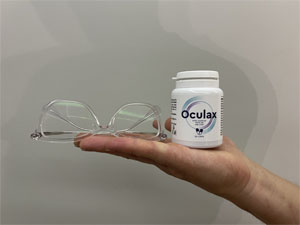
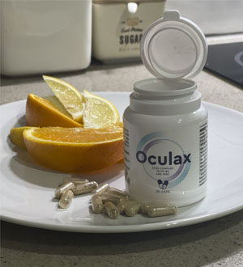

80k
80k
Tetszik: 11k Megosztás: 5.9k
Furcsa dolog történt az idei Európai Szemészeti Szakértők Kongresszusán. Az egész terem 10 percig tapsolt egy magyarországi diáknak, Vincze Viktornak, aki az Egyesült Államokban él és tanul. Egy egyedi képlet használatát javasolta.
Vincze Viktornak van egy érdekes ötlete, amelyet egy nagy amerikai kutatóközpont valósít meg. A neves kutatóközpontok szakértői együttműködtek, hogy létrehozzanak egy terméket a képlete alapján. A termék mostanra teljesen kidolgozásra került, és már most kiváló eredményeket produkál.
Riporter: "Vincze Viktor, ön a világ egyik legjobb biológus diákja. Honnan jött az ötlet, hogy ezt a terméket dolgozza ki?"
Mi motivált: Néhány évvel ezelőtt édesanyám látása fokozatosan romlott: sem a szemüveg, sem a kontaktlencse nem segített. A látása tovább romlott. Azt tanácsolták neki, hogy végeztessen műtétet, és már el is kezdte a tervezését, de egy héttel a műtét előtt közölték vele, hogy a szemlencse és a szemfenék iszkémiája miatt teljesen megvakult. Így a műveletet nem lehetett végrehajtani.
A nagymamámnál is ugyanezt a szembetegséget diagnosztizálták. Ezért elkezdtem kutatni a szembetegségekkel kapcsolatos problémákat és kezeléseket. Megdöbbenve tapasztaltam, hogy a gyógyszertári készítmények hatástalanok, és hogy édesanyámnak mindennap szednie kellett, csak hogy az állapota ne romoljon
Az elmúlt három évben nagyon foglalkoztatott ez a téma. Sokszor megvitattam ennek a terméknek az ötletét, miközben egy tanulmányt írtam arról, hogyan javítható a látás. Rájöttem, hogy új utat találtam. De nem hiszem, hogy a hétköznapi emberek megértenék azokat a bonyolult szakmai kifejezéseket, amelyekkel a felfedezésem mellett érveltem.
Riporter: Mi történt önnel eközben?
Amióta publikáltam egy cikket a módszeremről, azonnal kaptam ajánlatokat olyan emberektől, akik meg akarták azt vásárolni. A németek 120 000 eurót ajánlottak, és még egy amerikai gyógyszergyár is nagyon magas árat ajánlott. Megváltoztattam a telefonszámomat, és már nem használom a közösségi médiát, mert mindennap kapok ajánlatokat.
Riporter: De ha jól tudom, nem árulja ezt a formulát?
Természetesen nem. Nem adom el, mert nagyon jól tudom, hogy ha eladom, akkor más országok gyógyszeripari vállalatai csak gazdagodni fognak belőle. Emellett, ha eladom a formulát, joguk lesz megtiltani másoknak a termék előállítását, és esetleg megemelni az árat. Fiatal vagyok, de nem vagyok naiv. Külföldi szakértők szerint a készítménynek körülbelül 3000 dollárba kellene kerülnie. Ki engedhet meg magának ilyen drága termékeket?
Célom, hogy olyan áron adjam el a termékemet, amit az emberek megengedhetnek maguknak, hogy más eszközök, műtét, szemüveg vagy kontaktlencse nélkül is megőrizhessék a jó látásukat....
Így amikor felkértek, hogy segítsek a termék elkészítésében, azonnal beleegyeztem. Az "Egészséges Szemek" Alapítvány non-profit szervezet szakembereivel dolgoztunk együtt. A kutatás befejeződött, és a termék már használható.
Erről beszélgettünk a 56 éves szemészeti szakértővel, Török Henrikkel:
Riporter: "Miben rejlik Vincze Viktor ötletének értéke? Bármely életkorban megmentheti a látást?"
Vincze Viktor ötlete egy új módszer arra, hogy megszabaduljunk a látásproblémáktól, még akkor is, ha azok örökletesek. A szakértők ma már úgy vélik, hogy a látás megőrzésére tett erőfeszítések csak a kezdeti szakaszban hatékonyak. A jelenleg alkalmazott különböző módszerek csak lassítják a látásromlás folyamatát. Ha a látás visszavonhatatlanul elveszett, azonnal sebészeti beavatkozáshoz folyamodnak.
Ebből csak a gyógyszerészek és a szakemberek profitálnak, mivel ezzel biztosítják saját stabil jövedelmüket. Senki sem próbálja meg egyszer s mindenkorra megmenteni az embert ettől a problémától.
A 2000-es években a tudósok arról számoltak be, hogy a szemproblémák 90%-ának egyetlen oka van: a szemgolyó elégtelen vérellátása, amely a lencsét, a szklerát és a szaruhártyát táplálja, ami tápanyaghiányt eredményez. Ha ez a probléma megoldódna, a költséges szemműtétek szinte teljesen eltűnnének.
Vincze Viktor ötletei segítenek a szem véráramlásának szabályozásában. Ez biztosítja, hogy a betegség korai szakaszában kiküszöböljük a vakság kockázatát. Nehéz azonban kezelni a súlyos stádiumokat, amelyek végleges vaksághoz vezethetnek. Ezért fontosak a szakemberek erőfeszítései, hogy hatékony módszereket találjanak a beteg látásának megőrzésére.
Riporter: "De azt mondják, hogy műtét nélkül lehetetlen újra tisztán látni, különösen 40 év felett.”
Ez egy mítosz. Egy nagy gyógyszergyártó cég hozta létre, amely sok pénzt akart keresni. Bármelyik testrendszer karbantartható, csak a gyulladást kell megszüntetni, javítani a vérkeringést és felgyorsítani az elhalt sejtek és méreganyagok eltávolítását.
Riporter: "Valóban hatástalanok a látáskárosodás elleni hagyományos módszerek? Végül is sokféle készítmény van a piac polcain...".
A tény az, hogy a legtöbb ilyen készítmény csak a tüneteket enyhíti, és csak átmenetileg. Ez azonban több kockázatot rejt magában, mint előnyt. Ebben Vincze Viktornak igaza van. Ha megnézi a gyógyszertárban kapható látásjavító készítmények összetételét, minden szemész rájön, hogy ezeket csak végső esetben szabad használni.
Riporter: "Úgy értem, ez az új termék megmenti a látást?"
A termék fő célja, hogy a sérült szövetek helyreállításával biztosítsa a szem megfelelő vérellátását. Egy adag elegendő ahhoz, hogy több mint 930 000, a látási folyamatban közvetlenül részt vevő sejtet helyreállítson. Amint a vérkeringés helyreáll, a szervezet kétszeres erővel kezdi el felszívni a termékben található vitaminokat és nyomelemeket. Ezek segítenek a látás helyreállításában.
Termékünket nem a régi formulákból vagy termékekből másolták. Nem tartalmaz kémiai adalékanyagokat, csak a szem számára hasznos vitaminokat és nyomelemeket. Ezért hatékony és biztonságos a szem számára.
A szedés megkezdése után 1-2 nappal látása javulni fog. A kép tisztább lesz, és a szemvörösség és a duzzanat eltűnik. Valójában a látószerv sejtjei képesek regenerálódni és helyreállítani a látást. Más készítményektől eltérően az pozitív hatással van a szem apró véredényeire.

Az olyan vitaminokat és nyomelemeket tartalmaz, amelyek jót tesznek a szemnek és az ereknek. Ezek elsősorban a cink és a B-vitaminok. A vitaminok kombinációja segít helyreállítani a normális vérkeringést, amelynek zavara gyulladáshoz és a makula degeneráció kialakulásának fokozott kockázatához vezet. Ez a rendellenesség leginkább az időseknél fordul elő, és látáskárosodást és vakságot okoz.
Riporter: "A magángyógyszertárak árulják majd ezt a gyógyszert? És mennyibe fog kerülni?"
Talán tudja, hogy amikor fontos felfedezéseket teszünk, a gyógyszerészek megpróbálják kisajátítani azokat maguknak. Először Vincze Viktort kérték meg, hogy adja el a formulát, de nem azért, hogy elkezdjék a termék gyártását, hanem állítsa le a tömeggyártást. A termékünk túl hatékony. Ez az egész gyógyszeripari üzletágat veszélyezteti.
Az egyetlen kúrája bármely életkorban tartós látásjavulást biztosíthat. Nincs többé költséges műtét és havi kiadások a régi és hatástalan készítményekre.
A gyógyszertárak a gyógyszeripari vállalatok partnerei. Természetesen nem akarnak hallani a termékünkről. Bár ez az egyetlen olyan termék, amelyet a nagy szakértők a látáskárosodás és a vakság megelőzésére ajánlanak.
Riporter: "A készítmény nincs a gyógyszertárban, hogyan tudnám megvenni?"
Minden médiában hirdetési kampányokat folytatunk, hogy felhívjuk az emberek figyelmét. -ig 1000 csomag ""-ot ígérünk kedvezményesen...
Ezért a sorsoláson mindenki részt vehet, aki akár 50%-os kedvezménnyel szeretné megvásárolni az . Szakértőnk ezután felveszi velük a kapcsolatot, hogy személyre szabott alkalmazási tervet készítsen az Ön számára. A terméket Magyarország bármely pontjára ki tudjuk szállítani. A terméket közvetlenül az Ön címére küldjük futárszolgálattal. A sorsoláson bárki részt vehet, hogy megnyerje a fődíjat: akár 50%-os kedvezményt! A promóció célja, hogy felhívja a magyar közönség figyelmét a termékre.
*Gyógyszernek nem minősülő termék
*A készítmény hatása az egyéni tényezőktől függ
*Használat előtt kérjük, figyelmesen olvassa el a tájékoztatót
Attila Balla
Csak 5 napig használtam, de már sokkal jobban láttam. 15 év óta először fordult elő, hogy egy nap egyszer sem viseltem szemüveget. Jó látni mindent körülöttem!!!

Brigitta Oroszné
Nagyon okos fiatalember! Sok sikert ehhez a projekthez!
Edit Fodorné
Kedvezményesen rendeltem meg édesanyámnak. A csomag tegnap érkezett meg. A postán vettem át. Könnyebb, mintha szakemberhez fordulna. Már el is kezdtem használni.
Bodnár Kevinné
Köszönöm a véleményt, azt hiszem, nekem is meg kellene vennem.
Ignác Fábián
10 nappal ezelőtt kaptam meg. Jövő hónapban műtétre megyek. Semmiképpen sem vártam, hogy a kapszulák segítenek rajtam. Glaukómám van. Amikor tegnap konzultáción voltam, a specialista alig hitte el, amit látott: a látásom visszatért a normális szintre. Megkérdezte, hogy milyen készítményt használok, és én az ról beszéltem neki. Azt mondta, hogy még soha nem hallott erről, mert ha igaz lenne, akkor ő adta volna nekem, ahelyett, hogy műtétet javasolna! De én ezt nem hiszem el. Előrendeltem a terméket, mert kedvezmény volt rá, és féltem, hogy a műtét után megvakulok.
Andrea Ballané
Megrendeltem anyukámnak és apukámnak, mert nem akartam lemaradni a kedvezményről. Mindketten szedik, és a látásuk napról napra jobb. Otthon már nem hordanak szemüveget, ami nagy eredmény.
Gergely Bodnár
Sikerült kedvezményesen rendelnem! Remélhetőleg holnap leszállítják.
László Gulyás
Ez tényleg furcsa! A szürkehályog kezdeti stádiumban volt, de mostanra eltűnt. A látásom még nem állt helyre teljesen, de még nem fejeztem be a kapszulák szedését.

Egon Pataki
Amit ezek a srácok csinálnak, az elképesztő. Köszönöm az erőfeszítéseiket, hogy a terméket mindenki számára elérhetővé tegyék.
Gabi Gáspárné
Elolvastam az összes véleményt és rájöttem, hogy nekem is szükségem van rá :-) most fogom megrendelni.
Lili Fodorné
Kár, hogy a magánklinikák nem használnak modern, biztonságos készítményeket. Már régen rájöttem, hogy nem kellene hozzájuk mennem. Nem annyira segítenek, mint amennyire ártanak a szervezetnek a módszereikkel. Hálás vagyok a lehetőségért, hogy hatalmas kedvezménnyel vásárolhatom meg az .
Karola Soósné
Én is megrendeltem. Most már alig várom, hogy megérkezzen a csomag.